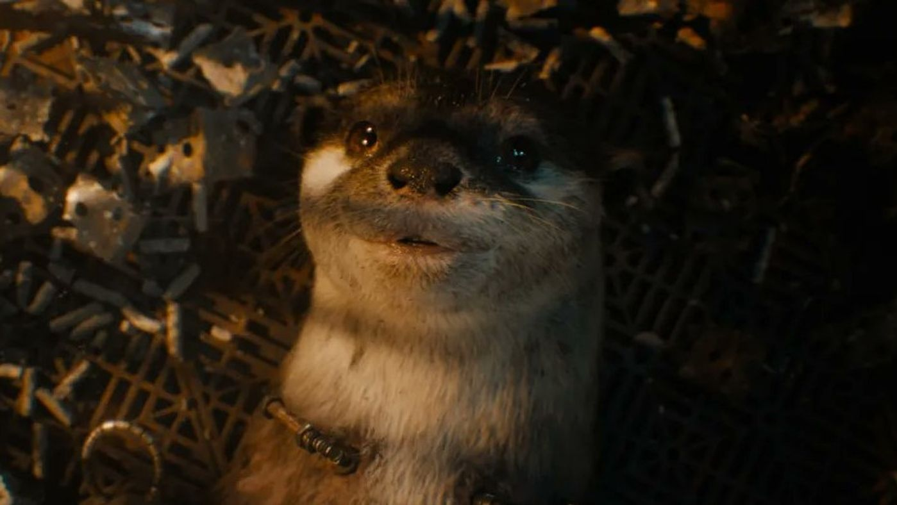

Guardians
of the
Galaxy
Fan Page


James Gunn directed every part of the Guardians of the Galaxy series. He co-wrote the first Guardians screenplay with Nicole Perlman. He wrote the screenplays for Vol. 2, The Holiday Special, and Vol. 3 on his own. The Guardians series is based on the Marvel comics created by Dan Abnett and Andy Lanning. Gunn has also written or co-written the screeplays for Troma's Tromeo and Juliet, Scooby-Doo, Scooby-Doo 2: Monsters Unleashed, and Zack Snyder's Dawn of the Dead. Additionally, Gunn wrote and directed Slither and Super. He is also the author of the novel, The Toy Collector.
Chris Pratt plays Star-Lord/Peter Quill in the Guardians of the Galaxy films. He was born on June 21, 1979 in Virginia, MN. He got his start on the hit television series, Parks and Recreation, and also stars in the Jurassic World film series.
IMDB PageZoe Saldana plays Gamora in the Guardians of the Galaxy films. She was born on June 19, 1978 in Passaic, New Jersey. She has been featured in a number of box office hits/franches, namely the Avatar films and the most recent Star Trek film series.
IMDB PageDave Bautista plays Drax in the Guardians of the Galaxy films. He got his start in entertainment as a WWE wrestler in the early 2000s. He has also appeared in such films as Army of the Dead, Knock at the Cabin, and Blade Runner 2049.
IMDB Page
Bradely Cooper provides the voice to Rocket in the Guardians of the Galaxy films. His career first took off in the late 2000s after he appeared in the first of The Hangover trilogy of films. He has also since appeared in such films as Silver Linings Playbook, The Place Beyond The Pines, and A Star is Born, which he also co-wrote and directed.
IMDB PageSean Gunn played Rocket onset and provided much of the character's physicality and comic timing in the Guardians of the Galaxy films. He also supplied the voice for young Rocket in Guardians of the Galaxy Vol. 3. Additionally, he plays the character of Kraglin in the series. Younger brother to James Gunn, he has appeared in a number of his older brother's projects, including Tromeo and Juliet, The Specials, Super, The Belko Experiment, and The Suicide Squad.
IMDB PageVin Diesel supplies the voice to Groot in the Guardians of the Galaxy films. His career began when he independently wrote, produced, directed, and starred in the short film, Multi-Facial. He then wrote, directed, and starred in the feature, Strays and went on to be discovered by Steven Spielberg and cast in his film, Saving Private Ryan. Diesel has also starred in the Fast and the Furious, xXx, and Pitch Black series of films
IMDB PageAustin Freeman played Groot onset in The Guardians of the Galaxy Christmas Special and Guardians of the Galaxy Vol. 3, providing much of the character's physicality in each film. He has also appeared in a number of low-budget horror films as well as playing supporting roles in Clint Eastwood's The Mule and HBO's Watchmen series.
IMDB PageMichael Rooker plays Yondu in the Guardians of the Galaxy films. He had previously been a successful character actor for years, appearing in such films as Henry: Portrait of a Serial Killer, Eight Men Out, Mississippi Burning, Days of Thunder, JFK, Cliffhanger, Tombstone, Mallrats, and many others. Rooker has also appeared in numerious James Gunn films outside of the Guardians series, including Slither, Super, and The Suicide Squad.
Karen Gillan plays Nebula, sister to Gamora, in all the Guardians of the Galaxy films. She had previously appeared in a number of supporting roles for both film and television, and supplied the voice to Amy Pond in numerous Doctor Who video games. Since appearing in the Guardians films, her career has taken off, appearing in lead and supporting roles in such films as The Big Short, In a Valley of Violence, Jumanji: Welcome to the Jungle, Stuber, Jumanji: The Next Level, and Gunpowder Milkshake.
Sean Gunn plays Kraglin in all the Guardians of the Galaxy films, as well as voicing young Rocket in Vol. 3 and standing in on set for the character in all films. Gunn has had guest appearances on such series as Angel, 3rd Rock from the Sun, Glee, Bones, and Robot Chicken. As mentioned previously on this page, he has also had several supporting roles in numerous feature films, including the ones that his brother, James, has produced and/or written and/or directed.
Lee Pace plays the villainous Ronan in the first Guardians of the Galaxy film. He later repirsed the role in Captain Marvel. He has also had prominent roles in a number of films and series, inlcuding Wonderfalls, The Fall, Pushing Daisies, A Single Man, Lincoln, The Hobbit trilogy, and Foundation. A Julliard graduate, Pace has also appeared in many theatrical productions over the years, and made his Broadway debut in 2011 in Larry Kramer's The Normal Heart.

Pom Klementieff plays Mantis in all the Guardians of the Galaxy films but the first one. She has been professionally acting since the mid-2000s, appearing in numerous short films, feature films, and series. Some of her most noteworthy projects include Spike Lee's Oldboy remake, Ingrid Goes West, Black Mirror, Uncut Gems, Westworld, and an uncredited role in James Gunn's The Suicide Squad.
Kurt Russell plays the deceptive and powerful Ego in Guardians of the Galaxy Vol. 2. He has been a respected professional actor for most of his life, starting his career as a child actor in series and films in 1962. His many celebrated roles are in films such as Escape From New York, The Thing, Big Trouble in Little China, Overboard, Backdraft, Tombstone, Stargate, Grindhouse, Bone Tomahawk, and The Christmas Chronicles and its sequel.

Chukwudi Iwuji plays the amoral and villainous The High Evolutionary in Guardians of the Galaxy Vol. 3. Nigerian-born, he first started acting in theatrical productions while studying business at Yale University. He has appeared in such films and series as Proof, Doctor Who, Wizards vs. Aliens, John Wick: Chapter 2, Daniel Isn't Real, News of the World, and James Gunn's Peacemaker.
Will Poulter plays the conflicted henchman to The High Evolutionary, Adam Warlock, in Guardians of the Galaxy Vol. 3. English-born, Poulter started acting professionally as a teenager in the critically acclaimed film, Son of Rambow. He has gone on to appear in numerous films and series, inlcuding Comedy Lab, We're the Millers, two Maze Runner films, The Revenant, Detroit, Black Mirror, and Midsommar,
Linda Cardellini voices Llyla in Guardians of the Galaxy Vol. 3, making her one of the few performers to have multiple roles in the MCU since she also portrays Laura Barton in several films. Cardellini started acting professionally in her early twenties, and went on to appear in such films and series as Freaks and Geeks, Legally Blonde, two live-action Scooby-Doo films, Brokeback Mountain, James Gunn's Super, Mad Men, two Daddy's Home films, The Founder, and Green Book.
